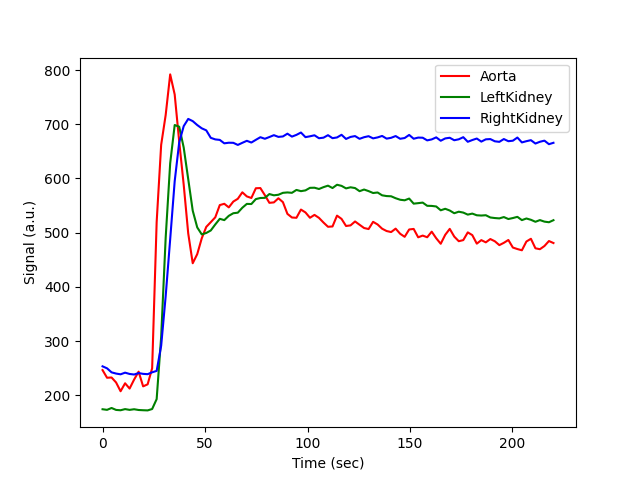
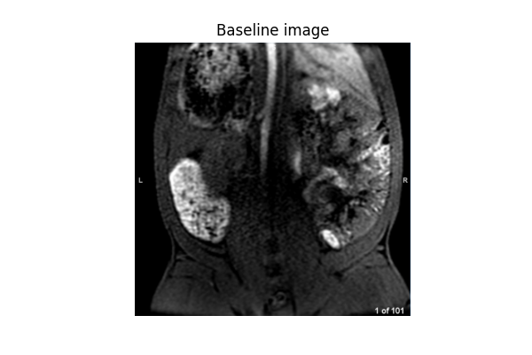
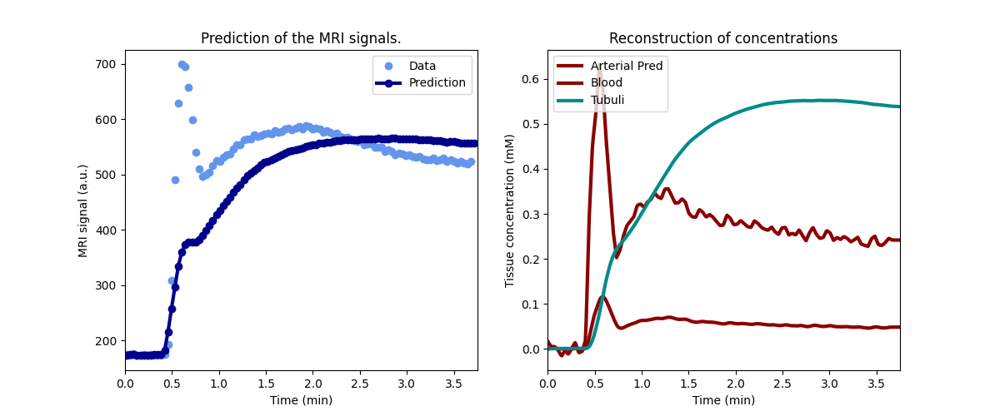
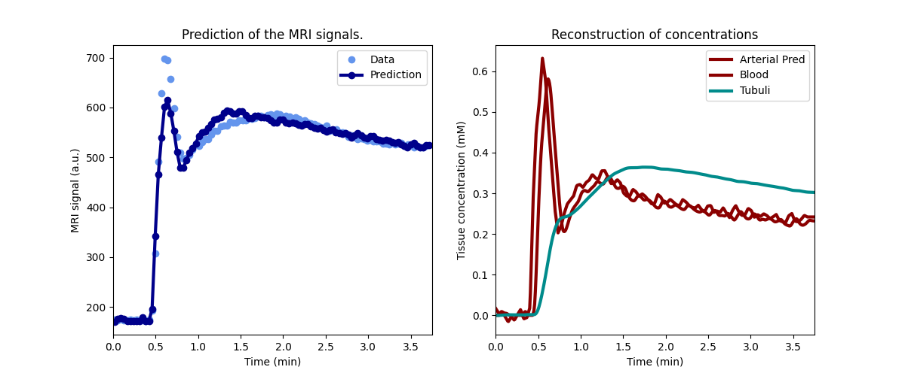
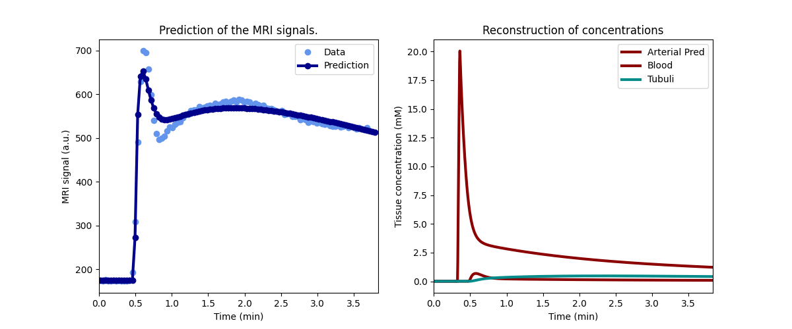
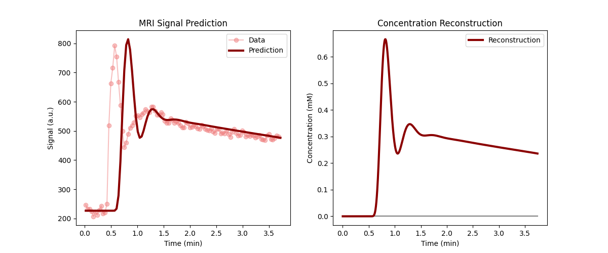
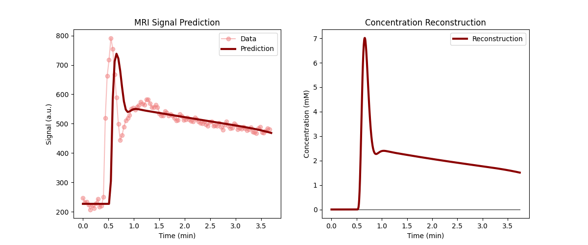
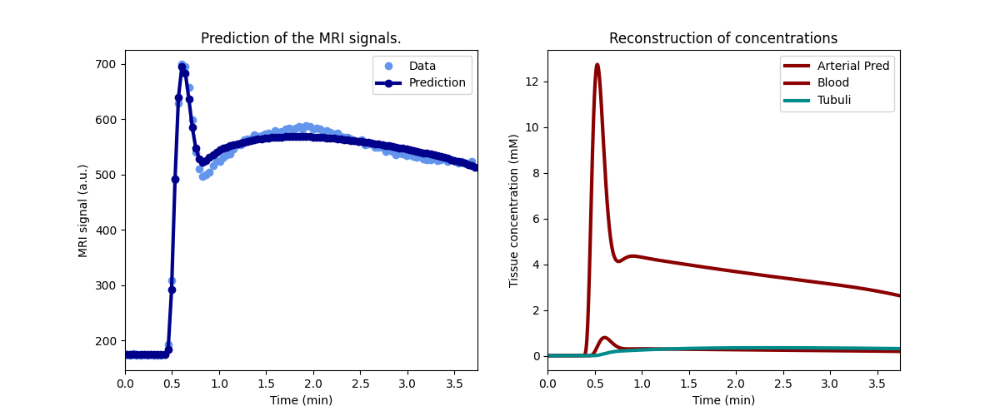
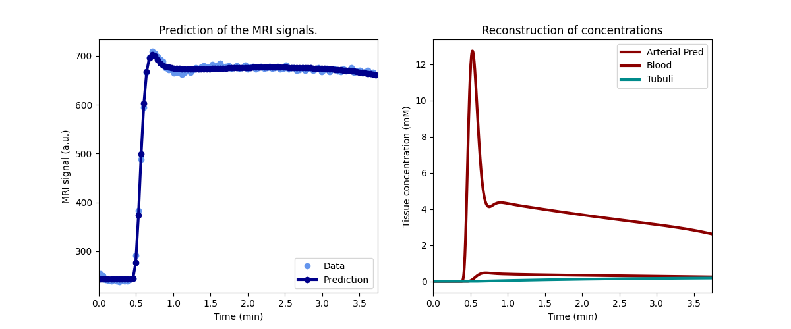
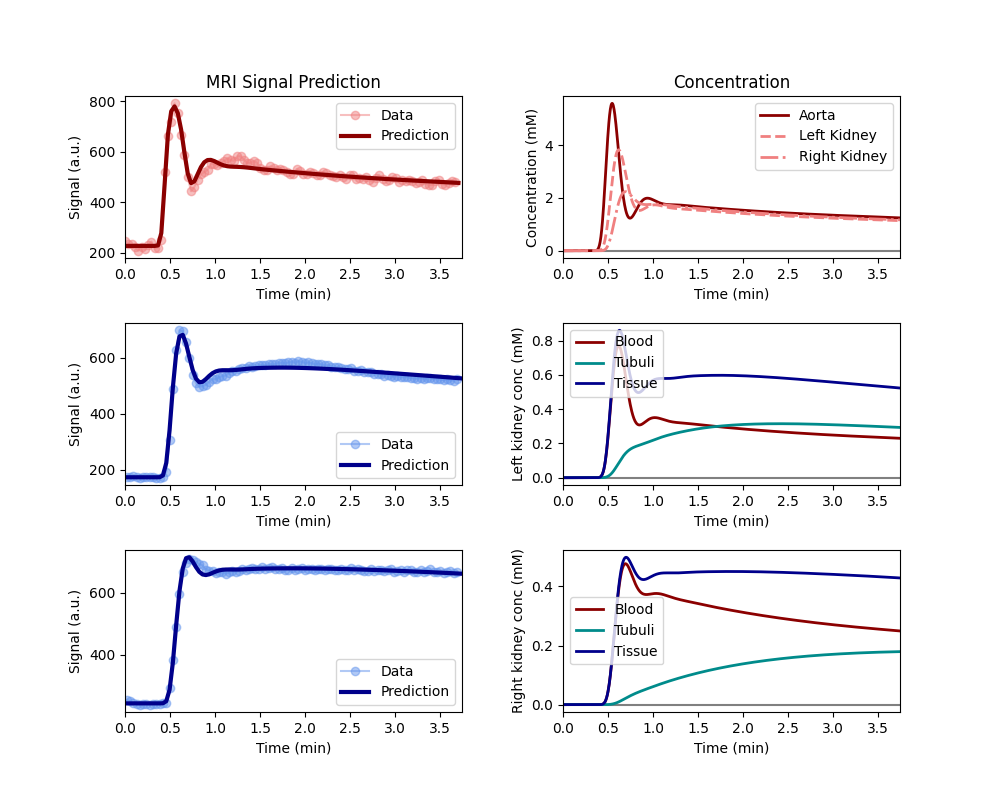

Note
Go to the end to download the full example code.
Inflow effects#
What are inflow effects?#
Inflow effects in the arterial input function (AIF) are a common type of artefact in DCE-MRI which severely biases the results if it is not properly acccounted for. The effect is caused by unsaturated blood flowing into the imaging slab causing an artefactual increase of the baseline signal. A naive analysis of inflow-corrupted data underestimates the arterial concentration and consequently overestimates tissue perfusion parameters.
Inflow effects can be detected visually by inspecting a precontrast image. Since blood has a long T1, arteries should be dark on a T1-weighted image. If they are instead brighter than surrounding tissue, this is evidence of inflow effects. The brightness typically shows a gradient with the vessel being brightest at the edge of the slab where flow-induced enhancement is most severe, then gradually darking as the blood travels down the slab and is pushed into steady-state by the excitation pulses.
Minimizing inflow effects#
The most robust approach to dealing with inflow effects is by eliminating them at the source, by optimizing the acquisition. In abdominal imaging this can often be achieved by positioning the slab coronally and extending the field of view to include the heart.
This may not always be possible though, for instance for prostate imaging where the heart is too far from the region of interest. Even when it is technically possible, such as for liver or renal imaging, it may require compromises in other areas: the approach forbids axial imaging, which is sometimes preferred, and may also come at a cost of spatial resolution.
Other approaches may be possible, such as increasing the flip angle to accelerate transition to steady-state; but this comes with other compromises such as increased tissue heating and reduced signal enhancement.
Correcting inflow effects#
If inflow effects cannot be fully avoided by optimizing the acquisition, or data with inflow effects are analysed retrospectively, the problem must be addressed at image analysis stage.
One approach that has sometimes been applied is to measure the input function deeper down in the slab where inflow effects have largely decayed. This is not always feasible and may cause variability in result for instance due to differences in blood velocity.
This tutorial illustrates two alternative approaches: using a standardised input function rather than attempting to measure it; and correcting for inflow by adding flow-related enhancement in the signal model.
The solutions are illustrated for the use case of MR renography in a minipig with unilateral kidney fibrosis.
Setup#
# Import packages
import numpy as np
import matplotlib.pyplot as plt
import matplotlib.image as mpimg
import dcmri as dc
# Read the dataset
data = dc.load_minipig()
Plot data#
Let’s start by plotting the data:

We see a clear difference between left kidney (healthy) and right kidney (fibrotic). We also see that the peak signal change in the aorta is similar to that in the kidney. As peak aorta concentrations in pure blood are always substantially higher than those in tissue, this shows that signal changes underestimate concentrations - consistent with the effect of inflow artefacts.
Verification on the data confirms this suspicion: looking at a precontrast slice through the aorta (below) we see that the aorta is bright compared to the surrounding tissue, and gradually becomes darker as we move further down into the slab - this is the signature sign of inflow artefacts.

Standard analysis#
Ignoring the inflow effects leads to significant bias in the
results. For the kidney
the most common modelling approach is implemented in the function
dcmri.Kidney. Let’s run it on the left kidney and see what we get:
kidney = dc.InverseKidney(
# TODO: imap does not work here because popt is not mapped in return
# Need to map popt everywhere before returning
# TODO: pfree need mapping to if provided at input
kinetics='2CF',
sequence='ZTE-3D-SPGR-SS',
t2s_relaxation=None, # TODO: This is pointless. Ignor T2s-relaxation instead
aif='measured',
)
data |= {
'tS_ki': data['tS_lk'],
'S_ki': data['S_lk']
}
result = kidney(data)
# # TODO: Remove **kwargs option in call for data in __call__ - kwargs
# # for genuine kwargs that are not input parameters
# # Calling this with kwargs would cause plot to fail.
# # One way of calling better than allowing two ways
kidney.plot(data, result)

dc.print_quantities(result['popt'], digits=2)
+----------------------------------------------------------------------------------------------------------------------------+
| Quantities |
+--------+---------+------------+----------------------------------------------+-----------------+-----------+-------+-------+
| Key | Value | Unit | Name | Group | Bounds | DICOM | OSIPI |
+--------+---------+------------+----------------------------------------------+-----------------+-----------+-------+-------+
| F_p_ki | 0.1 | mL/sec/cm3 | flow per unit tissue in plasma of the kidney | physiological | (0, 0.1) | | |
| FF | 0.5 | | filtration fraction | physiological | (0, 0.5) | | |
| T_ar | 2.6e-27 | sec | arterial mean transit time | physiological | (0.0, 10) | | |
| T_u | 65.0 | sec | mean transit time in tubuli | physiological | (30, 600) | | |
| v_p_ki | 0.3 | mL/cm3 | volume fraction in plasma of the kidney | physiological | (0, 0.3) | | |
+----------------------------------------------------------------------------------------------------------------------------+
The model is not fitting the data because by default the model parameters are not allowed to enter into unphysical regimes. So the model stops converging when they hit their bounds, as can be seen from the plasma flow which converged to its upper bound of 1.0 mL/sec/cm3.
If we free up the parameters then the model will fit a lot better, albeit with unphysical values for the parameters:

dc.print_quantities(result['popt'], digits=2)
+--------------------------------------------------------------------------------------------------------------------------+
| Quantities |
+--------+-------+------------+----------------------------------------------+-----------------+-----------+-------+-------+
| Key | Value | Unit | Name | Group | Bounds | DICOM | OSIPI |
+--------+-------+------------+----------------------------------------------+-----------------+-----------+-------+-------+
| F_p_ki | 1.0 | mL/sec/cm3 | flow per unit tissue in plasma of the kidney | physiological | (0, 0.1) | | |
| FF | 0.043 | | filtration fraction | physiological | (0, 0.5) | | |
| T_ar | 2.8 | sec | arterial mean transit time | physiological | (0.0, 10) | | |
| T_u | 30.0 | sec | mean transit time in tubuli | physiological | (30, 600) | | |
| v_p_ki | 1.0 | mL/cm3 | volume fraction in plasma of the kidney | physiological | (0, 0.3) | | |
+--------------------------------------------------------------------------------------------------------------------------+
The plasma flow and volume now hit the ceiling of what is allowed, many times higher than typical values in tissue - confirming the massive bias caused by inflow artefacts.
Using a standard input function#
One approach that can always be considered if arterial concentrations are not reliable is to use a modelled rather than a measured input function.
kidney = dc.InverseKidney(
kinetics='2CF',
sequence='ZTE-3D-SPGR-SS',
t2s_relaxation=None,
aif='fixed',
)
There are no input function models available for minipigs so
our best option is to use one derived for humans and adjust the
parameters. We will use the function dcmri.aif_tristan which is
built on a model of the circulation and thefore defined in terms
of physiological parameters.
We set the cardiac output (CO) to a typical value for the minipig (3.6 L/min or 60 mL/sec). The bolus arrival time (BAT) can be estimated from the peak of the aorta concentration - it does not have to be exact as the value is optimized in the fit. All other parameters are left at default values as no data exist for the minipig:
Now we can use this fixed concentration as input in the kidney model instead of the measured aorta signal.

dc.print_quantities(result['popt'], digits=2)
+--------------------------------------------------------------------------------------------------------------------------+
| Quantities |
+--------+-------+------------+----------------------------------------------+-----------------+-----------+-------+-------+
| Key | Value | Unit | Name | Group | Bounds | DICOM | OSIPI |
+--------+-------+------------+----------------------------------------------+-----------------+-----------+-------+-------+
| F_p_ki | 0.016 | mL/sec/cm3 | flow per unit tissue in plasma of the kidney | physiological | (0, 0.1) | | |
| FF | 0.17 | | filtration fraction | physiological | (0, 0.5) | | |
| T_ar | 8.9 | sec | arterial mean transit time | physiological | (0.0, 10) | | |
| T_u | 110.0 | sec | mean transit time in tubuli | physiological | (30, 600) | | |
| v_p_ki | 0.076 | mL/cm3 | volume fraction in plasma of the kidney | physiological | (0, 0.3) | | |
+--------------------------------------------------------------------------------------------------------------------------+
This now fits a lot better without unphysical parameter values, but the fit remains poor - indicating the input function does not represent reality very well even after adapting the parameters.
Model-based inflow correction#
An alternative solution is to fit an
aorta model to the data and use a signal model that
accounts for inflow effects (tof_corr=True).
The CO is set to the same values as for the modelled AIF above, but here this serves as initial guess rather than a fixed parameter:
aorta = dc.InverseAorta(
heartlung='chain',
organs='2cxm',
baseline='measured',
tof_corr=False,
sequence='ZTE-3D-SPGR-SS',
t2s_relaxation=None,
)
# missing_data = aorta.inputs() - data.keys()
# dc.print_quantities(missing_data)
data.pop('pfree') # TODO fails because some pfree not model params - not consistent. function shoudld just ignore invalid pfree parameters
data['tS'] = data['tS_ao'] # TODO not consistent - aorta should take named inputs like the others
data['S'] = data['S_ao']
result = aorta(data)
aorta.plot(data, result)

dc.print_quantities(result['popt'])
+----------------------------------------------------------------------------------------------------------------------------------------------------+
| Quantities |
+--------+------------------------+--------+--------------------------------------------------------+-----------------+--------------+-------+-------+
| Key | Value | Unit | Name | Group | Bounds | DICOM | OSIPI |
+--------+------------------------+--------+--------------------------------------------------------+-----------------+--------------+-------+-------+
| BAT | 15.249999380736703 | sec | bolus arrival time | indicator | (-30, 30) | | |
+--------+------------------------+--------+--------------------------------------------------------+-----------------+--------------+-------+-------+
| CO | 499.9965581761939 | mL/sec | cardiac output | physiological | (0, 500) | | |
| D_hl | 0.09845938951738094 | | transit time dispersion in the heart and Lungs | physiological | (0.01, 0.99) | | |
| E_or | 0.00021747590959283873 | | extraction fraction in the organs | physiological | (0, 0.5) | | |
| T_b_or | 9.350263243160839 | sec | mean transit time in blood of the organs | physiological | (0, 60) | | |
| T_e_or | 3.997512688805412 | sec | mean transit time in extracellular space of the organs | physiological | (0, 800) | | |
| T_hl | 19.857363017824582 | sec | mean transit time in the heart and Lungs | physiological | (0, 30) | | |
| vr_or | 0.9412061850996448 | | Venous return in the organs | physiological | (0, 1) | | |
+----------------------------------------------------------------------------------------------------------------------------------------------------+
This fits the signals well but produces unphysical CO at the ceiling of 500 mL/sec. Let’s try this again, but this time with inflow correction:

dc.print_quantities(result['popt'])
+-----------------------------------------------------------------------------------------------------------------------------------------+
| Quantities |
+--------+---------------------+--------+------------------------------------------------+-----------------+--------------+-------+-------+
| Key | Value | Unit | Name | Group | Bounds | DICOM | OSIPI |
+--------+---------------------+--------+------------------------------------------------+-----------------+--------------+-------+-------+
| BAT | 21.961060621183194 | sec | bolus arrival time | indicator | (-30, 30) | | |
+--------+---------------------+--------+------------------------------------------------+-----------------+--------------+-------+-------+
| CO | 68.19154431415457 | mL/sec | cardiac output | physiological | (0, 500) | | |
| D_hl | 0.18909603323034055 | | transit time dispersion in the heart and Lungs | physiological | (0.01, 0.99) | | |
| T_b_or | 17.674825722235067 | sec | mean transit time in blood of the organs | physiological | (0, 60) | | |
| T_hl | 10.40561011332485 | sec | mean transit time in the heart and Lungs | physiological | (0, 30) | | |
| TF | 0.2540399958782158 | sec | inflow time | physiological | (0, 1) | | |
| vr_or | 0.9288668311876553 | | Venous return in the organs | physiological | (0, 1) | | |
+-----------------------------------------------------------------------------------------------------------------------------------------+
This produces a good fit to the data and also reasonable values for the parameters. A cardiac output of 74 mL/sec equates to 4.5 L/min, which is in the right range for a minipig. Also a travel time of 280 msec (Inflow time) from heart to renal arteries seems reasonable. The peak concentrations (right) are also in the expected range for a standard injection (6mM).
Kidney model#
We can now use the output from the aorta model to generate concentrations and use those as input for the kidney model, instead of the modelled concentration:

dc.print_quantities(result['pars'], digits=2, title='Functional kidney (left)')
+---------------------------------------------------------------------------------------------------------------------------+
| Functional kidney (left) |
+--------+--------+------------+----------------------------------------------+-----------------+-----------+-------+-------+
| Key | Value | Unit | Name | Group | Bounds | DICOM | OSIPI |
+--------+--------+------------+----------------------------------------------+-----------------+-----------+-------+-------+
| F_p_ki | 0.032 | mL/sec/cm3 | flow per unit tissue in plasma of the kidney | physiological | (0, 0.1) | | |
| F_u_ki | 0.0019 | mL/sec/cm3 | flow per unit tissue in tubuli of the kidney | physiological | (0, 0.05) | | |
| FF | 0.058 | | filtration fraction | physiological | (0, 0.5) | | |
| T_ar | 2.5 | sec | arterial mean transit time | physiological | (0.0, 10) | | |
| T_u | 55.0 | sec | mean transit time in tubuli | physiological | (30, 600) | | |
| v_ki | 1.0 | mL/cm3 | volume fraction in the kidney | physiological | (0, 1) | | |
| v_p_ki | 0.074 | mL/cm3 | volume fraction in plasma of the kidney | physiological | (0, 0.3) | | |
+---------------------------------------------------------------------------------------------------------------------------+
This now gives a good fit with reasonable values for all parameters. Let’s run it on the right kidney as well so we can compare parameters:

dc.print_quantities(result['pars'], digits=2, title='Fibrotic kidney (right)')
+----------------------------------------------------------------------------------------------------------------------------+
| Fibrotic kidney (right) |
+--------+---------+------------+----------------------------------------------+-----------------+-----------+-------+-------+
| Key | Value | Unit | Name | Group | Bounds | DICOM | OSIPI |
+--------+---------+------------+----------------------------------------------+-----------------+-----------+-------+-------+
| F_p_ki | 0.0058 | mL/sec/cm3 | flow per unit tissue in plasma of the kidney | physiological | (0, 0.1) | | |
| F_u_ki | 0.00037 | mL/sec/cm3 | flow per unit tissue in tubuli of the kidney | physiological | (0, 0.05) | | |
| FF | 0.065 | | filtration fraction | physiological | (0, 0.5) | | |
| T_ar | 2.7 | sec | arterial mean transit time | physiological | (0.0, 10) | | |
| T_u | 280.0 | sec | mean transit time in tubuli | physiological | (30, 600) | | |
| v_ki | 1.0 | mL/cm3 | volume fraction in the kidney | physiological | (0, 1) | | |
| v_p_ki | 0.091 | mL/cm3 | volume fraction in plasma of the kidney | physiological | (0, 0.3) | | |
+----------------------------------------------------------------------------------------------------------------------------+
The right (fibrotic) kidney now shows a substantially lower perfusion and function than the left. The perfusion of the left kidney has not hit the maximum value. It is still relatively high (Fp = 0.033 mL/sec/cm3 or 198 mL/min/100mL) but it is possible that it is overcompensating to some extent for the damage on the right kidney.
Joint aorta-kidneys fit#
The method above produces a good solution for these data, but if the volumes of the kidneys are known this can be further refined by performing a joint fit of aorta and both kidneys.
This is not only more compact but should also be more robust as shared parameters can be eliminated and all data are accounted for equally. In this example the volumes are not actually known, so for the purpose of illustration we use a typical value of 85mL (note the kidneys are unlikely to be symmetric so this causes a bias in the left-right comparison of parameters such as GFR):
data |= {'vol_lk': 85, 'vol_rk': 85}
aorta_kidneys = dc.InverseAortaKidneys(
heartlung='chain', # Smoother first pass data
organs='2cxm', # Long acquisition times reveal extravasation # TODO to upper case 2CX for consistency
kidneys='2CF', # Intracellular agent
baseline='measured', # Data are available on precontrast T1
tof_corr=True,
sequence='ZTE-3D-SPGR-SS',
t2s_relaxation_ao=None, # No T2* relaxation with TE=0
t2s_relaxation_lk=None, # No T2* relaxation with TE=0
t2s_relaxation_rk=None, # No T2* relaxation with TE=0 # TODO relaxation models are always the same for left and right. Needs just on t2s_relaxation_ki
)
result = aorta_kidneys(data)
aorta_kidneys.plot(data, result)

dc.print_quantities(result['popt'] | result['pars'], digits=3, title='Joint Aorta-Kidneys fit')
+-----------------------------------------------------------------------------------------------------------------------------------------+
| Joint Aorta-Kidneys fit |
+--------+---------+------------+--------------------------------------------------------+-----------------+--------------+-------+-------+
| Key | Value | Unit | Name | Group | Bounds | DICOM | OSIPI |
+--------+---------+------------+--------------------------------------------------------+-----------------+--------------+-------+-------+
| BAT | 17.7 | sec | bolus arrival time | indicator | (-30, 30) | | |
+--------+---------+------------+--------------------------------------------------------+-----------------+--------------+-------+-------+
| CO | 82.1 | mL/sec | cardiac output | physiological | (0, 500) | | |
| D_hl | 0.0858 | | transit time dispersion in the heart and Lungs | physiological | (0.01, 0.99) | | |
| DRF | 0.757 | | Differential renal function | physiological | (0, 1) | | |
| DRPF | 0.747 | | Differential renal plasma flow | physiological | (0, 1) | | |
| E_li | 0.0 | | extraction fraction in liver | physiological | (0.0, 1.0) | | |
| E_lk | 0.0933 | | extraction fraction in the left kidney | physiological | (0, 1) | | |
| E_or | 0.105 | | extraction fraction in the organs | physiological | (0, 0.5) | | |
| E_rk | 0.0886 | | extraction fraction in the right kidney | physiological | (0, 1) | | |
| F_p_lk | 0.022 | mL/sec/cm3 | flow per unit tissue in plasma of the left kidney | physiological | (0, 0.1) | | |
| F_p_rk | 0.00745 | mL/sec/cm3 | flow per unit tissue in plasma of the right kidney | physiological | (0, 0.1) | | |
| fCO_ki | 0.0553 | | fraction of the cardiac output in the kidney | physiological | (0, 0.5) | | |
| FF_lk | 0.103 | | filtration fraction in the left kidney | physiological | (0, 0.5) | | |
| FF_rk | 0.0973 | | filtration fraction in the right kidney | physiological | (0, 0.5) | | |
| GFR | 0.254 | mL/sec | glomerular filtration rate | physiological | (0, 10) | | |
| GFR_lk | 0.192 | mL/sec | glomerular filtration rate in the left kidney | physiological | (0, 20) | | |
| GFR_rk | 0.0616 | mL/sec | glomerular filtration rate in the right kidney | physiological | (0, 20) | | |
| H | 0.45 | | hematocrit | physiological | (0, 1) | | |
| PF_ki | 2.5 | mL/sec | plasma flow in the kidney | physiological | (0, 100) | | |
| PF_lk | 1.87 | mL/sec | plasma flow in the left kidney | physiological | (0, 100) | | |
| PF_rk | 0.633 | mL/sec | plasma flow in the right kidney | physiological | (0, 100) | | |
| T_b_or | 14.4 | sec | mean transit time in blood of the organs | physiological | (0, 60) | | |
| T_e_or | 224.0 | sec | mean transit time in extracellular space of the organs | physiological | (0, 800) | | |
| T_hl | 15.3 | sec | mean transit time in the heart and Lungs | physiological | (0, 30) | | |
| T_lka | 0.799 | sec | mean transit time in the left kidney artery | physiological | (0, 5) | | |
| T_p_lk | 5.05 | sec | mean transit time in plasma of the left kidney | physiological | (0, 30) | | |
| T_p_rk | 15.7 | sec | mean transit time in plasma of the right kidney | physiological | (0, 30) | | |
| T_rka | 2.35 | sec | mean transit time in the right kidney artery | physiological | (0, 5) | | |
| T_u_lk | 57.7 | sec | mean transit time in tubuli of the left kidney | physiological | (30, 600) | | |
| T_u_rk | 125.0 | sec | mean transit time in tubuli of the right kidney | physiological | (30, 600) | | |
| TF | 0.275 | sec | inflow time | physiological | (0, 1) | | |
| v_ki | 1.0 | mL/cm3 | volume fraction in the kidney | physiological | (0, 1) | | |
| v_p_lk | 0.111 | mL/cm3 | volume fraction in plasma of the left kidney | physiological | (0, 0.3) | | |
| v_p_rk | 0.117 | mL/cm3 | volume fraction in plasma of the right kidney | physiological | (0, 0.3) | | |
+--------+---------+------------+--------------------------------------------------------+-----------------+--------------+-------+-------+
| vol_ao | 1.0 | cm3 | ROI volume in the aorta | whole-body | (0.0, 1000) | | |
| vol_lk | 85.0 | cm3 | ROI volume in the left kidney | whole-body | (0.0, 1000) | | |
| vol_rk | 85.0 | cm3 | ROI volume in the right kidney | whole-body | (0.0, 1000) | | |
| weight | 40.0 | kg | body weight | whole-body | (0, 300) | | |
+-----------------------------------------------------------------------------------------------------------------------------------------+
This produces all results for aorta and kidneys in one go, which also allows to derive some secondary parameters such as differential function which would otherwise have to be computed from separate results. Since the model uses the volumes this can also automatically output important whole kidney parameters such as GFR and RPF. Numerically the values are similar - though not identical - to those produced from a separate Aorta and Kidneys fit.
Total running time of the script: (0 minutes 4.883 seconds)